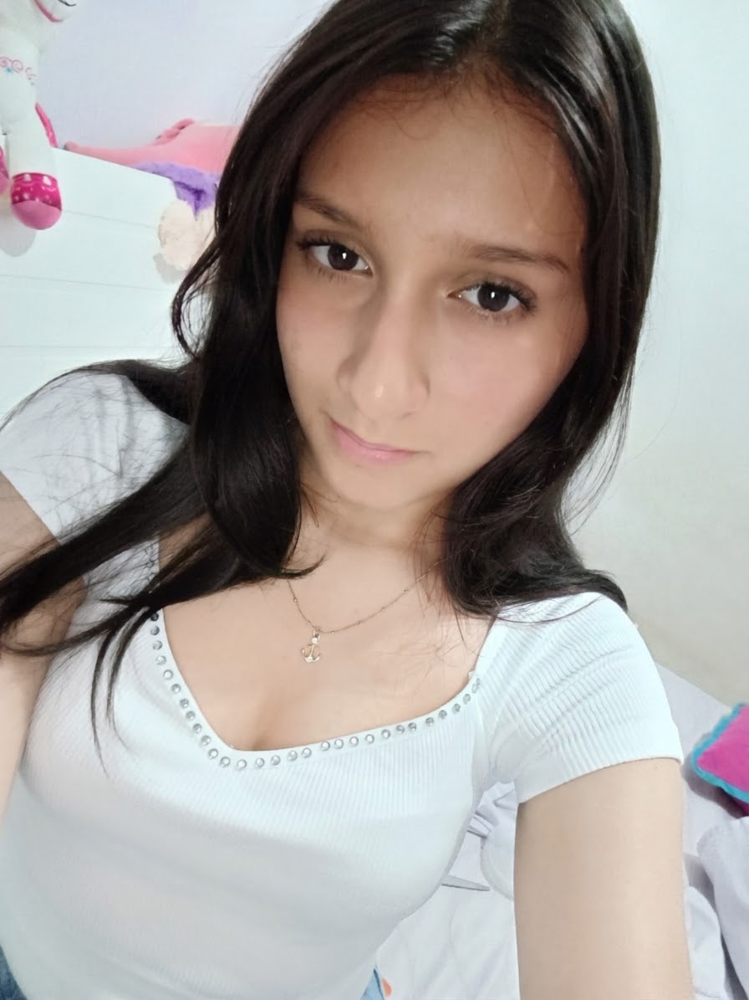

Sobre nosotros
Aura floral es un negocio enfocado en la creación e ilustración de diseños botánicos. No dependemos de la recolección de flores naturales: cada pétalo y hoja es tejida, moldeada y ensamblada por trabajadores apasionados donde el sentido artístico da formas a piezas únicas.
Nuestro distintivo es la combinación de texturas para dar vida a detalles, decoraciones de eventos y recuerdos que perduran en el tiempo sin perder su belleza.
Conoce nuestra misión
Nuestro equipo

Helen Rincon
CEO – Directora Ejecutiva
Diseño de los productos, organización de ideas y montaje del sitio web.

Samuel Arce
General Manager – Gerente General
Manejo de materiales, cálculo de costos, elaboración de productos y creación de las flores y arreglos.

Mariana Gomez
Marketing Manager – Gerente de Mercadeo
Publicidad, redes sociales, presentación de productos, creación de las flores, arreglos y atención a los clientes.
Company presentation
Aura floral Artesanía is a student business from I.E. Villacolombia that designs and sells handmade flowers, bouquets and keychains. Our products are durable, personalized and care for biodiversity.